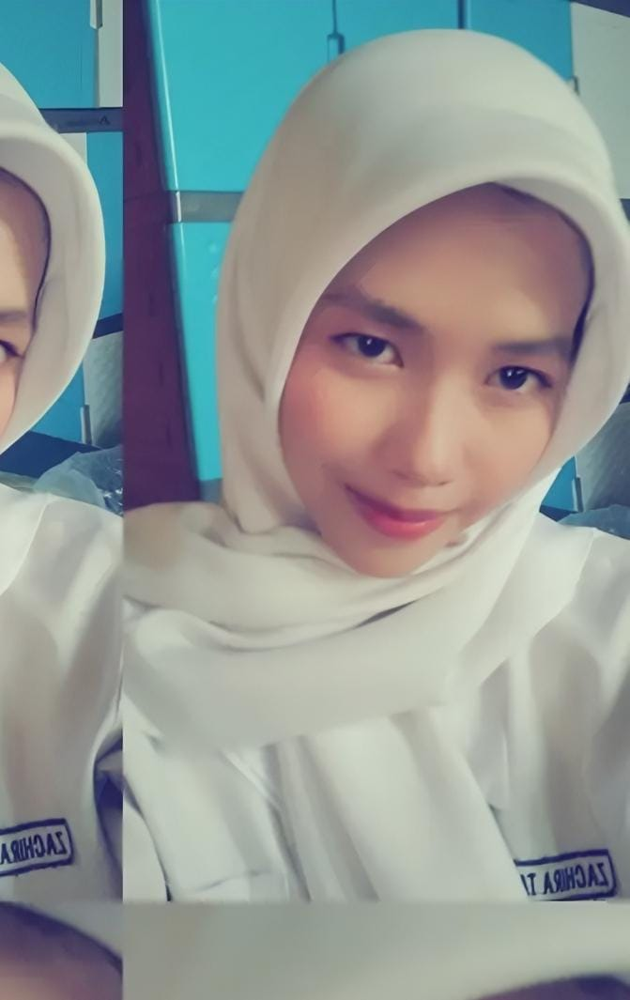
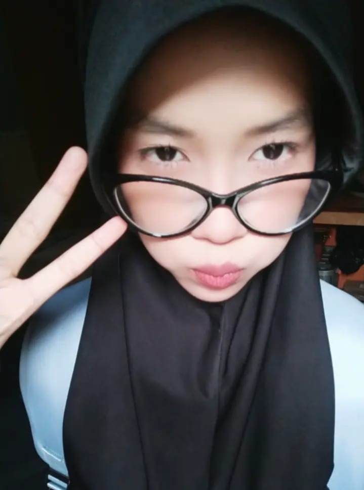
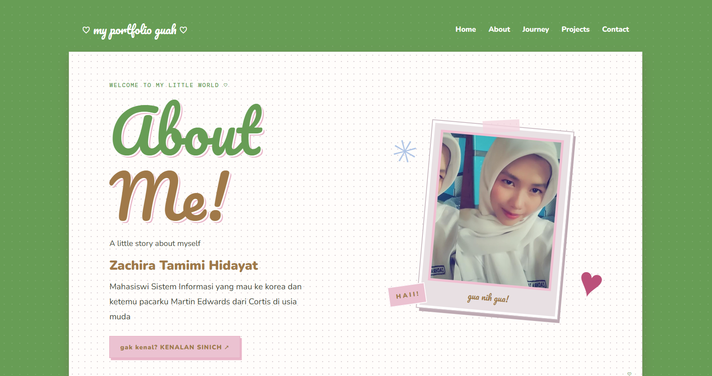

EDUCATION
Mahasiswi Sistem Informasi
𝗨𝗻𝗶𝘃𝗲𝗿𝘀𝗶𝘁𝗮𝘀 𝗧𝗮𝗻𝗷𝘂𝗻𝗴𝗽𝘂𝗿𝗮
yang mempelajari teknologi, sistem informasi, dasar pengembangan perangkat lunak, dan bertumbuh di dunia teknologi.
WELCOME TO MY LITTLE WORLD ♡
A little story about myself
ZACHIRA TAMIMI HIDAYAT
𝖬𝖺𝗁𝖺𝗌𝗂𝗌𝗐𝗂 𝖲𝗂𝗌𝗍𝖾𝗆 𝖨𝗇𝖿𝗈𝗋𝗆𝖺𝗌𝗂 𝗒𝖺𝗇𝗀 𝗆𝖺𝗎 𝗄𝖾 𝗄𝗈𝗋𝖾𝖺 𝖽𝖺𝗇 𝗄𝖾𝗍𝖾𝗆𝗎 𝗉𝖺𝖼𝖺𝗋𝗄𝗎 𝖬𝖺𝗋𝗍𝗂𝗇 𝖤𝖽𝗐𝖺𝗋𝖽𝗌 𝖽𝖺𝗋𝗂 𝖢𝗈𝗋𝗍𝗂𝗌 𝖽𝗂 𝗎𝗌𝗂𝖺 𝗆𝗎𝖽𝖺
Mau kenalan? CLICK SINIII ↗
this is me!

01 — MASIH BELUM KENALL? SINI SINI
𝐇𝐚𝐢 𝐤𝐚𝐰𝐚𝐧! 𝐀𝐤𝐮 𝐙𝐚𝐜𝐡𝐢𝐫𝐚 𝐓𝐚𝐦𝐢𝐦𝐢 𝐇𝐢𝐝𝐚𝐲𝐚𝐭 𝐲𝐚𝐧𝐠 𝐛𝐢𝐚𝐬𝐚 𝐝𝐢𝐩𝐚𝐧𝐠𝐠𝐢𝐥 𝐢𝐫𝐚𝐚, 𝐚𝐤𝐮𝐮 𝐦𝐚𝐡𝐚𝐬𝐢𝐬𝐰𝐢 𝐒𝐢𝐬𝐭𝐞𝐦 𝐈𝐧𝐟𝐨𝐫𝐦𝐚𝐬𝐢 𝐝𝐢 𝐔𝐧𝐢𝐯𝐞𝐫𝐬𝐢𝐭𝐚𝐬 𝐓𝐚𝐧𝐣𝐮𝐧𝐠𝐩𝐮𝐫𝐚. 𝐀𝐤𝐮 𝐭𝐞𝐫𝐭𝐚𝐫𝐢𝐤 𝐝𝐞𝐧𝐠𝐚𝐧 𝐝𝐮𝐧𝐢𝐚 𝐭𝐞𝐤𝐧𝐨𝐥𝐨𝐠𝐢, 𝐝𝐞𝐬𝐚𝐢𝐧, 𝐝𝐚𝐧 𝐩𝐞𝐧𝐠𝐞𝐦𝐛𝐚𝐧𝐠𝐚𝐧 𝐰𝐞𝐛𝐬𝐢𝐭𝐞! (𝐤𝐚𝐫𝐧𝐚 𝐩𝐫𝐨𝐬𝐩𝐞𝐤 𝐤𝐞𝐫𝐣𝐚𝐧𝐲𝐚 𝐥𝐮𝐚𝐬 𝐣𝐮𝐠𝐚 𝐬𝐢𝐡....).
𝐧𝐚𝐡 𝐬𝐚𝐚𝐭 𝐢𝐧𝐢 𝐚𝐤𝐮 𝐬𝐞𝐝𝐚𝐧𝐠 𝐛𝐞𝐥𝐚𝐣𝐚𝐫 𝐇𝐓𝐌𝐋, 𝐂𝐒𝐒, 𝐉𝐚𝐯𝐚𝐒𝐜𝐫𝐢𝐩𝐭, 𝐝𝐚𝐧 𝐝𝐚𝐬𝐚𝐫-𝐝𝐚𝐬𝐚𝐫 𝐔𝐈/𝐔𝐗. 𝐚𝐤𝐮 𝐬𝐮𝐤𝐚 𝐛𝐢𝐤𝐢𝐧 𝐛𝐢𝐤𝐢𝐧 𝐤𝐚𝐲𝐚 𝐠𝐢𝐧𝐢 𝐧𝐢𝐡 𝐚𝐰𝐨𝐚𝐤𝐨𝐰𝐤 𝐬𝐨𝐚𝐥𝐧𝐲𝐚 𝐚𝐤𝐮 𝐬𝐞𝐧𝐚𝐧𝐠 𝐦𝐞𝐧𝐜𝐨𝐛𝐚 𝐡𝐚𝐥 𝐛𝐚𝐫𝐮 𝐝𝐚𝐧 𝐦𝐞𝐧𝐠𝐞𝐦𝐛𝐚𝐧𝐠𝐤𝐚𝐧 𝐤𝐞𝐦𝐚𝐦𝐩𝐮𝐚𝐧 𝐦𝐞𝐥𝐚𝐥𝐮𝐢 𝐩𝐫𝐨𝐲𝐞𝐤!
♡ 𝑵𝒂𝒎𝒂: 𝒁𝒂𝒄𝒉𝒊𝒓𝒂 𝑻𝒂𝒎𝒊𝒎𝒊 𝑯𝒊𝒅𝒂𝒚𝒂𝒕
♡ 𝑱𝒖𝒓𝒖𝒔𝒂𝒏: 𝑺𝒊𝒔𝒕𝒆𝒎 𝑰𝒏𝒇𝒐𝒓𝒎𝒂𝒔𝒊
♡ 𝑴𝒊𝒏𝒂𝒕: 𝑴𝒊𝒏𝒂𝒕 𝒎𝒂𝒌𝒂𝒏
♡ 𝑯𝒐𝒃𝒊: 𝑫𝒂𝒏𝒄𝒆, 𝑩𝒆𝒓𝒏𝒚𝒂𝒏𝒚𝒊, 𝑴𝒆𝒏𝒅𝒆𝒏𝒈𝒂𝒓𝒌𝒂𝒏 𝑴𝒖𝒔𝒊𝒌
DIBAWAH ADA SKILL LIST
02 — MY LITTLE JOURNEY
Hal-hal yang menjadi bagian dari perjalananku ♡
EDUCATION
𝗨𝗻𝗶𝘃𝗲𝗿𝘀𝗶𝘁𝗮𝘀 𝗧𝗮𝗻𝗷𝘂𝗻𝗴𝗽𝘂𝗿𝗮
yang mempelajari teknologi, sistem informasi, dasar pengembangan perangkat lunak, dan bertumbuh di dunia teknologi.
COMPETITION
FORPROV I · 2024
Aku pernah meraih juara 1 lomba silat FORPROV I Kalbar pada tahun 2024 dalam kategori bercerita! sebelum itu aku selalu pulang malam, capek, dan Alhamdulillah aku sangat puas dengan hasilnya.
ORGANIZATION
SMA
Saat kuliah saya belum mengikuti kegiatan organisasi atau sebagainya, tetapi pada saat sma saya pernah mengikuti kegiatan ekstrakulikuler Silat dan Drumband, kemudian tak lama dr itu saya keluar dari club Drumband dan fokus melanjutkan eskul silat saya.
03 — MY CREATIONS
Sedikit kumpulan karya dan hal yang sedang kupelajari.

PROJECT 01
Dalam projek ini, saya disuruh untuk membuat website Portofolio tentang diri saya, walau tidak sepenuhnya sempurna tetapi dengan projek pertama yang saya buat ini setidaknya saya tau bagaimana membuat website diri sendiri.
PROJECT 02
Masih banyak hal baru yang ingin kupelajari dan kembangkan.
04 — LET'S BE FRIENDS . . .
Terima kasih yaa sudah mampir ke halaman kecilkuu. Yuk, temenan denganku! ♡